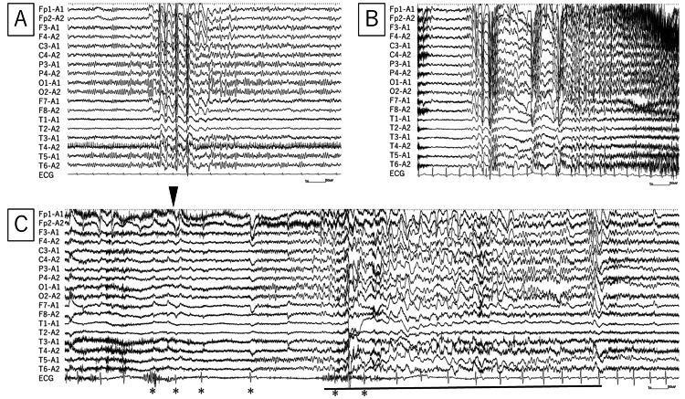

Meta · Pág. 07 de 07
TCG: duro → abalos → névoa pós-ictal
Ao final desta página você vai saber:
- por que o corpo fica duro;
- por que os abalos clônicos sinalizam fadiga;
- por que parar o movimento ≠ consciência de volta;
- a ordem de grandeza do pós-ictal — sem inventar status.
Por que a TCG “chama”
A crise tônico-clônica generalizada é a crise que se vê com frequência, a que qualquer uma pode terminar como ela, e a que chamam para atender. Contextos: rua/SAMU, emergência, enfermaria, CTI — paciente “passando mal” recolhido.
Na TCG atingem-se a via motora e a via da consciência. A consciência é perdida. Há hiperativação da via motora.
Fase tônica: o corpo duro
Neurônios motores hiperativos, em atividade excessiva sem parar, geram contração muscular. Contração sustentada → paciente duro → fase tônica. Fase tônica = hiperfuncionamento dos neurônios motores; corpo todo duro.
Não se consegue inibir de imediato esses neurônios “muito potentes”. É preciso esperar os neurônios se cansarem — esgotar a energia deles.
Fase clônica: fadiga em ondas
O esgotamento não é imediato e linear: eles dão uma esgotadinha e se recuperam, repetidamente. Sequência: duro → esgota um pouco → mole → recupera → duro de novo → esgota → mole → duro…
Nesse processo de tentar parar, o neurônio ativa e desativa ciclicamente. Sai-se da fase completamente dura e entra-se na fase mole-duro-mole-duro = abalos clônicos.
Regra de ouro: os abalos clônicos mostram que o neurônio começou a fadigar e que essa crise vai acabar.
História natural: neurônios que precisam ser cansados até o fim dos movimentos. Quando o neurônio se cansa de vez, acabam os movimentos.
Fim do movimento ≠ consciência de volta
Fim dos movimentos ≠ recuperação imediata da consciência: os neurônios ainda precisam se restabelecer. No pós-ictal imediato: completamente perdido, sem consciência ainda, sem saber o que aconteceu; recuperação aos poucos.
Pós-ictal: minutos a horas (fonte truncada)
Recuperação pós-ictal: de minutos a, às vezes, horas. No pós-ictal: não sabe onde está, o que está fazendo, quem o levou, o próprio nome, o endereço; aos poucos lembra quem é, depois que está fora de casa…
CAIXA-NUANÇA · VFP [091]
Canon da fatia: minutos a horas (ordem de grandeza didática da TCG típica).
Nuance LBE: o envelope pode ir de segundos a dias (média <24 h); em idosos o pós-ictal pode se prolongar bastante.
Isso não vira cutoff de alta nem protocolo de observação — só enriquece a ordem de grandeza sem substituir o VFP.
Fronteira · FONTE-TRUNCA [093]
A recuperação pós-ictal corta mid-sentence no recorte. Inventário clínico/protocolo de status, TCG >5 min e doses não fecha aqui — fronteira A9.

Stepper das 4 fases
Tônica
Contração sustentada → duro
Clônica
Ativa/desativa (fadiga) → abalos; sinal de que vai acabar
Fim motor
Movimentos param
Pós-ictal
Restabelecimento (min–horas); desorientação (onde/quem/endereço)
Clônicos = neurônio fadigando · crise vai acabar.
[FONTE-TRUNCA] — não inventar cutoff de alta nem protocolo de status
Achado típico
Abalos clônicos não são “piora misteriosa” — são o cérebro cansando.
Erro comum desmontado
“Parou de tremer = já está normal” — falso; o pós-ictal ainda rouba orientação e identidade por minutos a horas.
Revisão ativa
- O que a fase tônica representa no neurônio motor?
- Por que clônicos são sinal de que a crise vai acabar?
- O que a fonte não autoriza a inventar depois do pós-ictal?
Quiz
Conexão
TCG prolongada / status / doses → fronteira A9 (fora deste recorte).